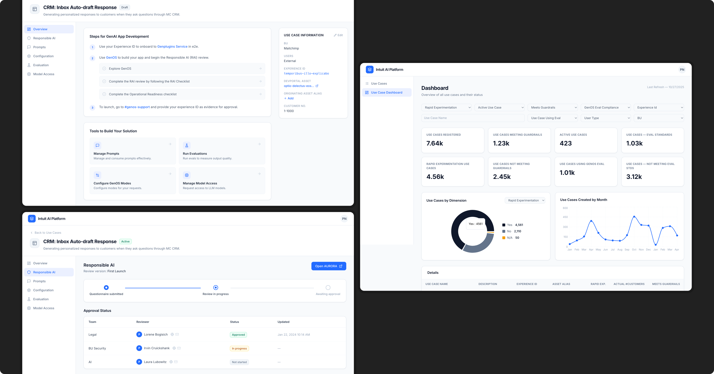
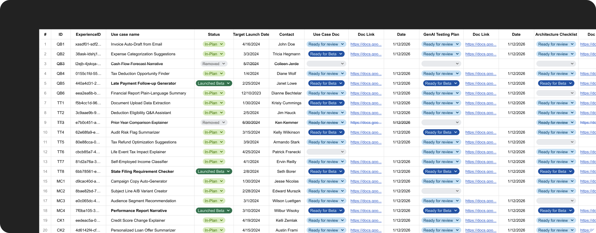
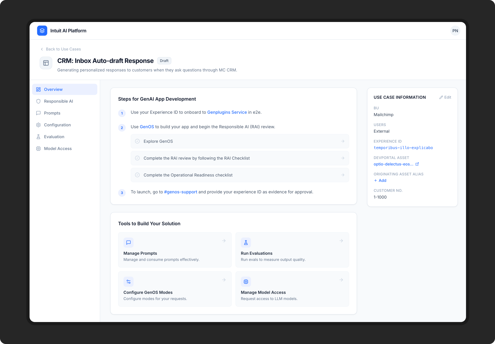
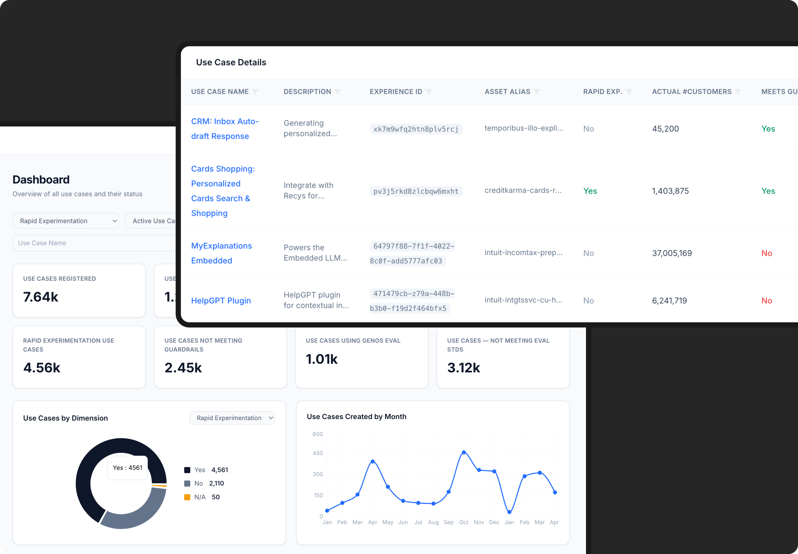
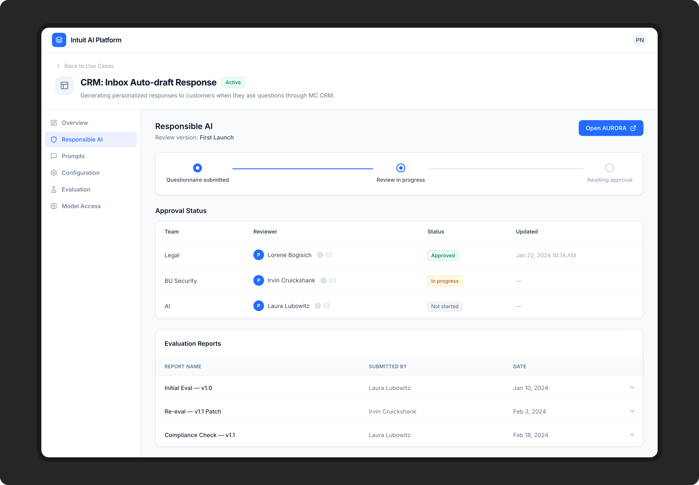

From spreadsheets to a company-wide standard: designing GenAI governance at Intuit
GenAIinternal toolgovernanceenterprise

Overview
Over 7,600 GenAI use cases have been registered through this platform — one that didn't exist before I designed it. In 2023, Intuit's product teams were racing to ship GenAI features into TurboTax, QuickBooks, and Mailchimp with no governance process, no single contact for legal or security sign-off, and 20 program managers tracking compliance in spreadsheets. I designed the system that replaced all of that: a centralized hub where teams register use cases, connect to GenAI capabilities, track review status, and launch responsibly.
My RoleProduct Designer
TimelineOct 2023 - Jan 2024
Team1 PM, 6 Engineers
ToolsFigma
Problem
GenAI was moving faster than the company's guardrails
In 2023, product teams across Intuit were racing to build GenAI features into TurboTax, QuickBooks, and other products. But there was no process for ensuring those features passed legal, security, and AI reviews before shipping. The consequences were real:
Product teams didn’t know who to contact for legal, security or AI sign-off, or even that they needed to.
There was no single source of truth on the resources, guiding teams on what to complete and when.
Product teams wanted to move fast, but the extensive review processes were blocking them from being the pioneers in this new era.
Reviewers had no visibility into urgency across incoming requests. They couldn't prioritize without chasing teams for more context, adding yet more communication overhea.
Program managers responsible for tracking review status were doing it entirely in spreadsheets, manually chasing dozens of teams across Slack.

A portion of the spreadsheet used to track hundreds of GenAI use cases across the company
Previous process: Stakeholders were going through painful, manual, and lengthy processes.
Everyone wanted to move faster, but the process wasn’t designed to scale.
STEPProduct teamReviewersProgram managersPlatform team
1
Request access to GenAI capabilities
💬Slack
Manually onboard team to GenAI capabilities
2
Build a GenAI feature
3
Ready to launch, but blocked by a mandatory process
Log use case in tracking sheet
🗂️Spreadsheet
4
Submit questionnaire for review
⚠️Warning: 2-3 weeks
Review questionnaire and provide feedback
📄Google Docs, Slack
Triage and assign reviewers
🗂️Spreadsheet
5
Launch feature once approved
Track use case status
Pain points
6
Repeat the process if there are changes (e.g. changing AI model)
My Process
Moving fast in ambiguous territory
This project had no clear precedent internally. GenAI governance frameworks were still being written industry-wide, and I was designing a system before the rules were fully defined. My first priority was understanding who was in pain and what the minimum viable process needed to look like.
Stakeholder mapping
After talking to 30+ stakeholders, I identified four distinct user groups with conflicting needs. Designing for all four without creating a bloated product was the central challenge.
Product Team
Reviewers
Program Managers
Platform Team
Speed and clarity: ship GenAI features without guessing who to contact or what to do next.
Structured, complete submissions from teams, not ad-hoc threads or half-filled requests.
Visibility and control when tracking dozens or hundreds of use cases across the company.
Self-serve onboarding to GenAI capabilities and guardrails teams can rely on at scale.
Discovery with program managers
The program managers were the most acute pain point. I ran working sessions with them to map their current process step by step: what they tracked, where information lived, and how they followed up. This gave me a clear picture of what the system needed to replace.
The most important decision wasn't a UI decision
The review form required product teams to answer detailed legal, security, and AI questions — with version history, comment threads, document attachments, and collaborative editing over time. Building this natively would have consumed months of engineering time we didn't have. I evaluated third-party review tools and proposed integrating an existing platform via API instead of building from scratch.
This was a rare case where the right design call was to not design something. The tradeoff: some visual inconsistency. The gain: we shipped the full end-to-end experience in weeks instead of months, and focused engineering entirely on what only we could build — intake, routing, and status visibility.
Solution
A central hub that connects the entire GenAI launch process
The registry wasn't a single screen; it was a system connecting four types of users through a shared workflow. Here's how it worked end to end.
The new process: A use case registry that streamlines the launch readiness process
STEPProduct teamReviewersProgram managersPlatform team
1
Register GenAI use case
Use Case Registry
Automated access to GenAI capabilities granted
2
Build GenAI features
3
Submit review form
External Tool
Receive assignment notification
💬Email/Slack
4
Review submission and approve
External Tool
Monitor use case dashboard
Use Case Registry
5
Launch features

Homepage: resources at a glance
The homepage was designed for product teams new to the process. It surfaced key resources, documentation, and guidance on what a GenAI review requires, so teams could understand what was ahead before they started building.

Dashboard: one view for program managers
Program managers needed visibility across dozens of teams without manually chasing status. The dashboard automatically populated as product teams registered use cases, with each submission's review stage and owner surfaced in one place with no manual updates required.

Status tracking: one view for everyone
Once a use case was registered and the review form assigned, teams and program managers could track the review lifecycle from a single view. Status was pulled in automatically from the third-party tool via API, with no manual updates required.
Key Design Decisions
Keeping complexity on the system's side, not the user's
Decision 1: Don't build the review form natively
The temptation was to design a fully custom form experience inside the hub. I pushed back on this. The review form needed version history, comment threads, document attachments, and collaborative editing, all features that would take months to build well. Using a third-party tool via API let us focus engineering resources on the parts only we could build: intake, routing, and status visibility. The tradeoff was some loss of visual consistency, but product teams already used the third-party tool in other contexts, which reduced friction.
Decision 2: One hub, not separate tools per audience
Early conversations surfaced a suggestion to build separate interfaces for reviewers vs. product teams. I argued against this; a single hub with role-based views would reduce fragmentation and give program managers a unified view across all use cases. The shared surface also made it easier to add future use case types without rebuilding.
Decision 3: Registration as orientation, not just intake
The old flow had a painful failure mode: teams would build a GenAI feature, then discover at launch that they needed legal and security sign-off and get blocked. I designed registration to happen before building and the use case page generated on registration to act as that feature's orientation hub. From day one, teams see the full process ahead: what reviews are required, what resources exist, and what their next steps are. The goal wasn't to fix 'teams don't know.' It was to design a structure where not knowing isn't possible.
Outcome
7,600 use cases registered. Zero spreadsheets.
The registry became the company-wide standard process for GenAI use case launches. Program managers went from manually tracking status across Slack and spreadsheets to monitoring a live dashboard. Product teams had a single place to start, regardless of which product or business unit they belonged to.
017,600+ GenAI use cases registered and governed through the platform
02Time taken for launch readiness reduced from 8 weeks to 2 weeks
03Eliminated manual spreadsheet tracking for 20 program managers across Intuit's business units, saving them hours of manual work each week
04Shipped in 3 months (Oct 2023 – Jan 2024) and in production use company-wide
Reflection
What this project taught me about designing in ambiguity
This was one of the most ambiguous projects I've worked on, not because the UX was complex, but because the problem itself was still being defined. Governance frameworks for GenAI didn't exist yet. I was designing a process for a thing the company was still figuring out how to govern.
What I learned is that in fast-moving, high-stakes situations, the designer's job is often to create the container: a structure that gives people clarity even when the rules inside it are still evolving. The hub wasn't sophisticated, but it replaced chaos with legibility. Sometimes that's the most valuable thing you can ship.
I also learned that the hardest design decisions on this project weren't about screens; they were about scope. Deciding what not to build was as important as anything I designed.